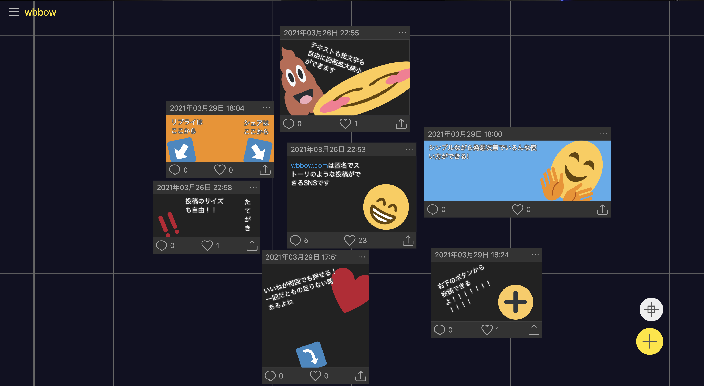
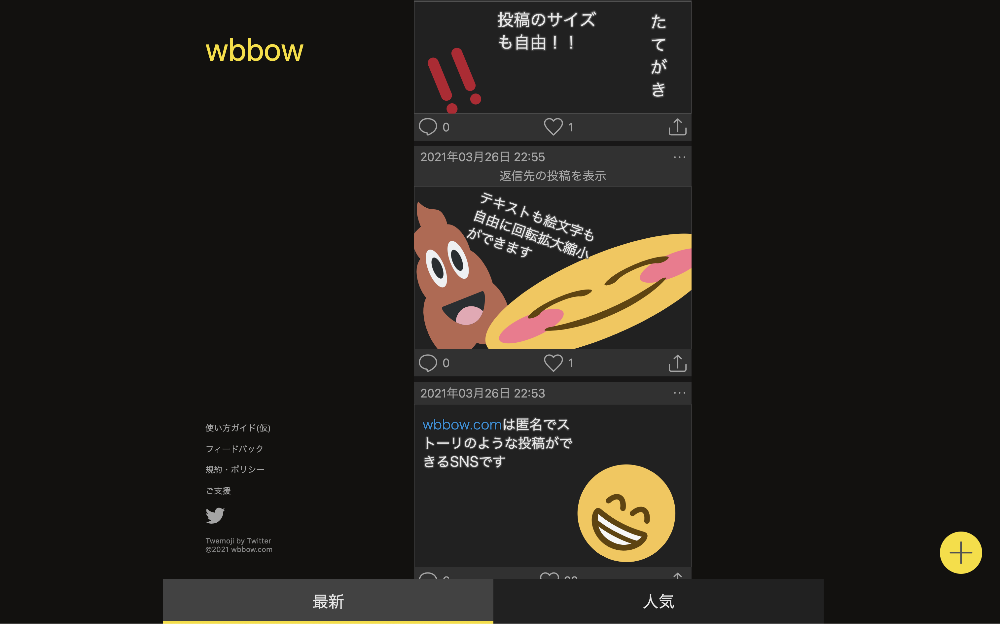
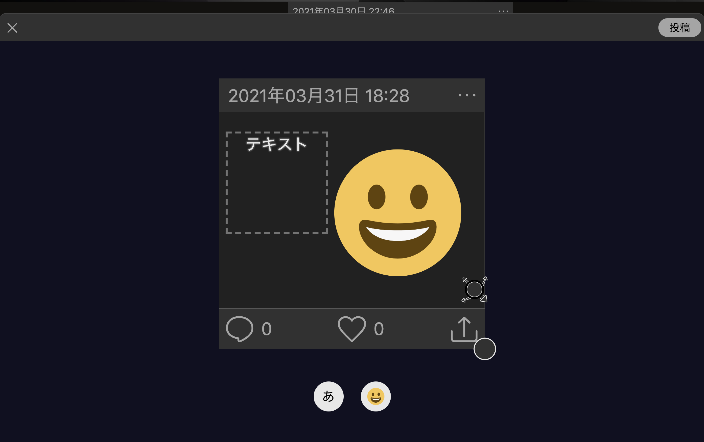

wbbowは、絵文字とテキストで、Instagramのストーリーズ機能のような投稿ができるサービスです。
利用登録なしで、完全に匿名で利用できます。
Twitter感覚で使っても、絵文字を組み合わせてイラストを作っても、どんな使い方でもOK!使い方はあなた次第！
トップページでは新着順と人気順で投稿を見ることができます。
いいねと思ったら、何回でもいいねを押すことができます。
Twitterなどにシェアもできます。
画面右下の+ボタンから投稿を作成できます。
また、各投稿の吹き出しボタンから返信を作成することもできます。
投稿画面では「あ」ボタンでテキストを、「😀」ボタンで絵文字を追加し、自由に場所や大きさ、回転を決めることができます。
絵文字やテキストエリアの右下にあるハンドルを右下・左上に移動することで拡大縮小、右上・左下に移動することで回転ができます。
削除するには、テキストや絵文字を移動した際に出てくるゴミ箱に重ねてください。
返信を投稿する際には、返信場所を決める必要があります。投稿ボタンを押した際に出てくる表示に従ってください。
©️2021 wbbow.com